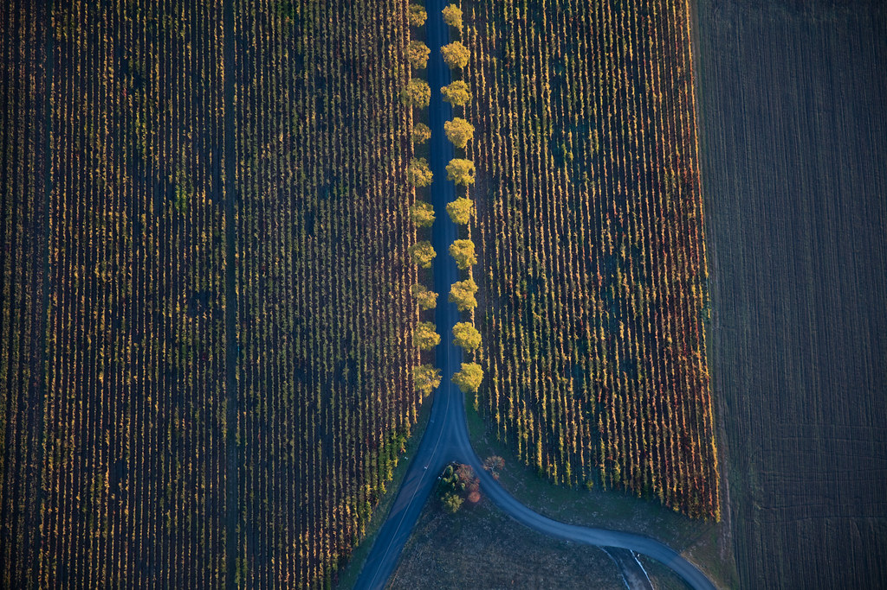

Get involved
We would welcome a conversation
Healthy Hectare is building the practical evidence base for a safer agricultural future. If you are interested in funding, research partnership, pilot collaboration, or strategic support, start here.
For farms
Test transition without betting the farm
- a lower-risk way to test transition on a manageable parcel
- expert guidance from top regenerative agronomists and consultants
- a crop safety net through close monitoring, interpretation, and technical support
- a pathway toward lower comparative input costs over time
- evidence on whether yield, quality, and resilience can be maintained or improved
- practical learning that can inform broader whole-farm decisions
For funders & research partners
An unusually tangible programme to back
Healthy Hectare brings environmental health, agricultural transition, farm economics, and evidence generation into a single programme. It produces:
- practical farm-level proof
- measurable outcomes over time
- case studies and reporting that can support wider adoption
- crop transition pathway knowledge for sector actors
- learning that connects field practice with policy and systems change
For regulators & sector bodies
Field evidence you can act on
- credible field evidence from commercial crop systems that currently use HHPs
- like-for-like comparison data generated on the same farm
- clearer research priorities for crop transition pathway development
- reporting and write-up that supports practical sector knowledge
- stronger grounds for guidance, regulatory engagement, and future replication
Partnership opportunities
Where support makes the difference
Healthy Hectare is seeking aligned partners to help establish and grow the programme, including support for:
- pilot implementation
- baseline and ongoing monitoring
- research and evaluation
- data and reporting systems
- documentation and case-study development
- future replication and scale-up

Start the conversation
Tell us who you are and what you're interested in
The details you share here are used only to route and respond to your enquiry.